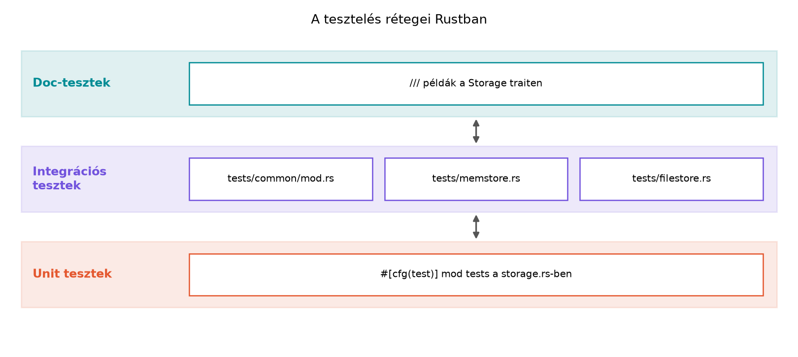

A C++-os világban a tesztelés szinte mindig külső keretrendszer
kérdése: GoogleTest, Catch2 vagy Boost.Test. A buildrendszerben külön
célt kell létrehozni, a tesztfájlokat kézzel kell regisztrálni, a
tesztelendő privát fehér dobozt gyakran
#define private public trükkel vagy friend osztályokkal
nyitjuk meg. A Rust ezt a kérdést a nyelvbe és a Cargo-ba építette: a
#[test] attribútummal jelölt függvényeket a
cargo test automatikusan futtatja, az egységtesztek a
forráskód mellett, az integrációs tesztek a tests/
könyvtárban, a dokumentációs példák pedig magukban a doc-kommentekben
élnek.
A cél most az, hogy az rkv-core Storage absztrakcióját
egység-, integrációs és dokumentációs tesztekkel fedjük le, és közben
kialakítsunk egy generikus tesztkészletet, amelyet mind a
MemStore, mind a FileStore implementációra
futtathatunk.
Definíció. A unit teszt egyetlen modul,
függvény vagy típus viselkedését ellenőrzi, és a forráskódban, általában
egy #[cfg(test)] mod tests blokkban helyezkedik el. Az
integrációs teszt a crate nyilvános API-ját a
tests/ könyvtárból, tehát külső fogyasztóként ellenőrzi. A
doc-teszt pedig a /// dokumentációs kommentben
lévő, `````rust jelölésű kódblokk, amelyet arustdoc`
lefordít és futtat.
Szabály. A #[test] függvényeket a
cargo test párhuzamosan, minden CPU-magon futtatja. A teszt
akkor sikeres, ha a függvény visszatér, és akkor bukik, ha pánikol. Az
assert!, assert_eq!, assert_ne!
makrók a pánik mechanizmusára épülnek: hamis feltétel esetén
panic!-t váltanak ki. A
#[should_panic(expected = "részlet")] attribútum azt
ellenőrzi, hogy a függvény pánikol-e, és a pániküzenet tartalmazza-e a
megadott részt.
Szabály. A #[cfg(test)] modulban a
tesztkód hozzáfér a szülőmodul privát elemeihez is, mert a modul a
crate-en belül marad. Az integrációs tesztek ezzel szemben kizárólag a
nyilvános API-t látják, mert a tests/ könyvtár külön
crate-ként fordul.
Szabály. A tesztfüggvény visszatérési típusa lehet
Result<T, E>, ahol E implementálja a
std::error::Error traitet. Ekkor a teszt a ?
operátorral futtathat hibás műveleteket: ha Err keletkezik,
a teszt elbukik, ha Ok, akkor sikeres.
C++ oldalon a GoogleTest keretrendszerrel:
#include <gtest/gtest.h>
#include "mem_store.h"
TEST(StorageTest, SetGet) {
MemStore store;
store.set("k", std::vector<uint8_t>{'v'});
EXPECT_EQ(store.get("k"), std::vector<uint8_t>{'v'});
}Rustban ugyanez a rkv-core crate storage.rs
fájljában:
#[test]
fn memstore_set_get_roundtrip() {
let mut store = MemStore::default();
store.set("k", b"v".to_vec()).unwrap();
assert_eq!(store.get("k").unwrap(), Some(b"v".to_vec()));
}A különbség nem szintaktikai csupán. A Rust teszt a source fájlban
él, a cargo test minden regisztráció nélkül megtalálja, és
a #[test] attribútum a függvényt a teszt-binárisba
irányítja. A GoogleTest makrók egy külső könyvtárat és egy külön build
targetet igényelnek. Ráadásul a Rust teszt a Result-ot
visszaadva képes a ? operátorral kezelni a hibákat, ami
C++ban külön ASSERT_NO_THROW vagy
std::expected minta kérdése.
Munkakönyvtár: ~/rust-labor/rkv/
A labor az rkv-core Storage trait megvalósításait
teszteli három szinten. Az előző alfejezetekben már létrehoztuk a
Storage traitet és a két implementációt, valamint az
Error enumot a thiserror derive-tal. A
teszteléshez ezt a meglévő API-t használjuk, és közben egy új generikus
tesztkészletet hozunk létre, amely mindkét implementációra
futtatható.
storage.rs-benElőször adjunk egy privát normalizáló függvényt a
storage.rs-hez, és teszteljük azt a
#[cfg(test)] mod tests blokkban. A privát függvény a
kulcsot trimeli és kisbetűssé alakítja:
fn normalize_key(key: &str) -> String {
key.trim().to_lowercase()
}A storage.rs alján lévő unit tesztmodul:
#[cfg(test)]
mod tests {
use super::*;
#[test]
fn normalize_trims_and_lowercases() {
assert_eq!(normalize_key(" Hello "), "hello");
}
#[test]
fn memstore_lists_keys() {
let mut store = MemStore::default();
store.set("b", b"2".to_vec()).unwrap();
store.set("a", b"1".to_vec()).unwrap();
let pairs = store.list("").unwrap();
assert_eq!(pairs.len(), 2);
assert_eq!(pairs[0].0, "a");
assert_eq!(pairs[0].1, b"1".to_vec());
}
#[test]
#[should_panic(expected = "index out of bounds")]
fn index_out_of_bounds_panics() {
let v = vec![1];
let _ = v[1];
}
}A normalize_key privát, de a tests modul a
use super::*; miatt látja. A #[should_panic]
példa mesterséges, de jól mutatja a szintaxist: ha a pánik üzenete nem
tartalmazná az expected részt, a teszt elbukna.
tests/ könyvtárbanHozzuk létre a tests/common/mod.rs fájlt. Ez a modul a
generikus tesztkészletet tartalmazza, amely a Storage
traiten keresztül bármely implementációra lefuttatható:
use rkv_core::Storage;
pub fn assert_storage_contract<S>(mut store: S)
where
S: Storage,
{
assert_eq!(store.get("missing").unwrap(), None);
store.set("k", b"v".to_vec()).unwrap();
assert_eq!(store.get("k").unwrap(), Some(b"v".to_vec()));
store.set("k", b"v2".to_vec()).unwrap();
assert_eq!(store.get("k").unwrap(), Some(b"v2".to_vec()));
assert_eq!(store.list("").unwrap().len(), 1);
store.delete("k").unwrap();
assert_eq!(store.get("k").unwrap(), None);
}A tests/memstore.rs fájlban csak ennyi kell:
mod common;
use rkv_core::MemStore;
#[test]
fn memstore_satisfies_storage_contract() {
common::assert_storage_contract(MemStore::default());
}A tests/filestore.rs Result-ot visszaadó teszt, és
ideiglenes fájlt használ:
mod common;
use rkv_core::{Error, FileStore};
use std::env;
#[test]
fn filestore_satisfies_storage_contract() -> Result<(), Error> {
let mut path = env::temp_dir();
path.push(format!("rkv-test-{}.log", std::process::id()));
let store = FileStore::open(&path)?;
common::assert_storage_contract(store);
std::fs::remove_file(path)?;
Ok(())
}A FileStore::open a korábbi alfejezetben rögzített módon
Result<Self, Error>-t ad, a ? tehát
automatikusan konvertálja az io::Error-t a
thiserror #[from] implementációján keresztül.
Ha a fájl létrehozása vagy törlése sikertelen, a teszt elbukik.
A futtatáshoz a workspace gyökeréből:
cargo test -p rkv-coreVárt kimenet (rövidítve, verziófüggő):
running 4 tests
test storage::tests::normalize_trims_and_lowercases ... ok
test storage::tests::memstore_lists_keys ... ok
test storage::tests::index_out_of_bounds_panics ... ok
test tests::memstore_satisfies_storage_contract ... ok
test tests::filestore_satisfies_storage_contract ... ok
test result: ok. 5 passed; 0 failed; 0 ignored; 0 measured; 0 filtered outA pontos számok a meglévő tesztektől függenek.
A Storage trait dokumentációjában tegyünk egy futtatható
példát a storage.rs fájlban:
/// A kulcs–érték tároló absztrakciója.
///
/// # Példa
///
/// ```
/// use rkv_core::{MemStore, Storage};
///
/// let mut store = MemStore::default();
/// store.set("k", b"v".to_vec()).unwrap();
/// assert_eq!(store.get("k").unwrap(), Some(b"v".to_vec()));
/// ```
pub trait Storage {
fn get(&self, key: &str) -> Result<Option<Vec<u8>>, Error>;
fn set(&mut self, key: &str, value: Vec<u8>) -> Result<(), Error>;
fn delete(&mut self, key: &str) -> Result<(), Error>;
fn list(&self, prefix: &str) -> Result<Vec<(String, Vec<u8>)>, Error>;
}A cargo test --doc -p rkv-core parancs a
rustdoc segítségével lefordítja és futtatja ezt a
kódblokkot. A doc-tesztben az unwrap elfogadható, mert a
cél a példa tömörsége, nem a hibakezelés.
A tesztelési rétegeket a következő ábra foglalja össze:

A három szint elkülönül, de közös bennük, hogy a
cargo test egyetlen paranccsal futtatja mindet, és a
Storage trait az a szerződés, amelyet az integrációs
generikus tesztkészlet egységesen ellenőriz.
Továbbvitt eredmény. A
tests/common/mod.rs fájlban lévő
assert_storage_contract<S: Storage> generikus
tesztkészlet a későbbi alfejezetek alapja lesz: a Property-alapú tesztelés és benchmark erre épít
property-teszteket, a Szálak, Send és Sync a
megosztott rkv szálbiztosságát, a Záróprojekt pedig a teljes rendszer integrációs
tesztjeit futtatja ezzel a szerződéssel.
Párhuzamos tesztek, közös állapot. A
cargo test alapértelmezésben párhuzamosít. Ha a tesztek
ugyanarra a fájlra írnak, vagy környezeti változóra támaszkodnak,
versenyszerű hibákat kaphatunk. Az integrációs FileStore
tesztben a folyamatazonosítót (std::process::id())
használjuk a fájlnévben, hogy elkerüljük az ütközést. Ha több tesztnek
kell közös erőforrás, használjunk Mutex-et vagy egyedi
erőforrást tesztesetenként.
#[should_panic] expected nélkül. Ha
nem adunk meg expected paramétert, a teszt bármilyen pánik
esetén sikeres lesz, akár a tesztelt kód egy tőle független helyen is
pánikolt. Mindig adjuk meg a pániküzenet egy egyedi részletét.
Az integrációs teszt nem látja a privát elemeket. Ha egy típust vagy függvényt csak integrációs teszttel akarunk ellenőrizni, akkor annak nyilvánosnak kell lennie. Ez nem hiba, hanem tervezési jel: ha a belső logikát nem tudjuk a publikus API-n át tesztelni, akkor vagy unit teszt kell a modulban, vagy az API nem elég teljes.
Klónozás a borrow checker „legyőzésére”. A
tesztekben gyakori kísértés, hogy a kölcsönzési hibák elkerülésére
mindent .clone()-ozzunk. A generikus tesztkészletben a
Storage trait bound elegendő, nincs szükség klónozásra; a
mut store paraméter és a
&self/&mut self metódusok a borrow
checkerrel biztonságosak.
tests/ könyvtárban van, és a
rkv_core::storage::apply privát függvényt próbálja hívni.
Lefordul-e? Indokold válaszod.#[test]
fn test_apply() {
let mut store = rkv_core::MemStore::default();
rkv_core::storage::apply(&mut store, rkv_core::Command::Get("k".into())).unwrap();
}#[test] függvénnyé,
és használd a ? operátort a hibakezelésre.TEST(StorageTest, DeleteMissingKey) {
MemStore store;
EXPECT_NO_THROW(store.delete("missing"));
EXPECT_EQ(store.get("missing"), std::nullopt);
}Implementációs feladat az rkv-ban. Bővítsd a
tests/common/mod.rs fájlban lévő
assert_storage_contract függvényt egy
list_prefix ellenőrzéssel: állítsd be a one és
two kulcsokat, majd ellenőrizd, hogy a
list("") mindkettőt visszaadja, a list("t")
csak a two-t.
Hibajavítás, refaktorálás. A
tests/filestore.rs teszt jelenleg a folyamatazonosítót
használja, de ha egyszerre két teszt is futtatja, ütközhet. Javítsd ki
egyedi, időbélyeg- vagy véletlenszám-alapú fájlnévvel, és gondoskodj
arról, hogy a fájl akkor is törlődjön, ha a teszt közben pánikol. (Tipp:
RAII-minta, Drop.)
Nem fordul le. Az apply függvény
pub(crate), tehát a crate-en belül elérhető, de a
tests/ könyvtár külön crate-ként csak a pub
elemeket látja. A storage modul is privát, így a
rkv_core::storage::apply útvonal sem érhető el. Ha az
apply-t tesztelni akarjuk, azt a storage.rs
#[cfg(test)] mod tests blokkjában tehetjük meg.
Rust megoldás:
#[test]
fn delete_missing_key() -> Result<(), rkv_core::Error> {
let mut store = rkv_core::MemStore::default();
store.delete("missing")?;
assert_eq!(store.get("missing")?, None);
Ok(())
}A delete és a get is Result-ot
ad, a ? továbbítja a hibát, a teszt pedig
Result-tal jelzi a keretrendszernek.
pub fn assert_storage_contract<S>(mut store: S)
where
S: Storage,
{
assert_eq!(store.get("missing").unwrap(), None);
store.set("k", b"v".to_vec()).unwrap();
assert_eq!(store.get("k").unwrap(), Some(b"v".to_vec()));
store.set("k", b"v2".to_vec()).unwrap();
assert_eq!(store.get("k").unwrap(), Some(b"v2".to_vec()));
assert_eq!(store.list("").unwrap().len(), 1);
store.set("one", b"1".to_vec()).unwrap();
store.set("two", b"2".to_vec()).unwrap();
assert_eq!(store.list("").unwrap().len(), 3);
let prefixed = store.list("t").unwrap();
assert_eq!(prefixed.len(), 1);
assert_eq!(prefixed[0].0, "two");
store.delete("k").unwrap();
assert_eq!(store.get("k").unwrap(), None);
}use std::path::{Path, PathBuf};
struct TempFile {
path: PathBuf,
}
impl TempFile {
fn new(prefix: &str) -> Self {
let mut path = std::env::temp_dir();
let unique = format!("{}-{}", prefix, std::process::id());
path.push(unique);
Self { path }
}
fn path(&self) -> &Path {
&self.path
}
}
impl Drop for TempFile {
fn drop(&mut self) {
let _ = std::fs::remove_file(&self.path);
}
}
#[test]
fn filestore_satisfies_storage_contract() -> Result<(), Error> {
let temp = TempFile::new("rkv-test");
let store = FileStore::open(temp.path())?;
common::assert_storage_contract(store);
Ok(())
}A TempFile Drop implementációja garantálja,
hogy a fájl a teszt végén, pánik esetén is törlődjön. Az
env::temp_dir() mellé a folyamatazonosító csak a konkurens
processzeket választja szét, de ha ugyanazon processzben több
TempFile példány készülne, az ütközne. Itt egyetlen teszt
használja, így elegendő; általánosabb megoldáshoz időbélyeg vagy
véletlen komponens kell.
A Rust tesztelési eszközei beépítettek: a #[test]
attribútum a forráskódban, a tests/ könyvtár az integrációs
tesztek, a /// dokumentációs példák pedig a doc-tesztek
színhelye. A cargo test egy paranccsal futtatja mindhárom
szintet, párhuzamosan. A unit tesztek a
#[cfg(test)] mod tests blokkon keresztül érik el a privát
elemeket, az integrációs tesztek viszont kizárólag a publikus API-t
látják. A tesztek assert!, assert_eq! makrókat
használnak, pánik esetén buknak,
#[should_panic(expected = "...")] attribútummal a pánikot
ellenőrizhetjük, Result visszatéréssel pedig a
? operátort használhatjuk. A laborban létrehoztuk a
tests/common/mod.rs generikus tesztkészletet
assert_storage_contract<S: Storage> néven; ezt a
MemStore és FileStore integrációs tesztek
egyaránt használják. Továbbvitt eredmény: a
tests/common/mod.rs generikus tesztkészlet a Property-alapú tesztelés, a Szálak, Send és Sync és a Záróprojekt alfejezetek alapja. A
Storage trait doc-tesztje a cargo test --doc
paranccsal futtatható.
A #[test], a #[cfg(test)], az
assert! makrók, a #[should_panic] és a
Result-ot visszaadó tesztek a Rust stabil nyelvi elemei, a
The Rust Programming Language és a Rust Reference dokumentálja őket. A
cargo test viselkedése a Cargo dokumentációjában
ellenőrizhető. A libtest pontos kimenete és a párhuzamos
futtatás részletei a toolchain verziójától függenek. A
FileStore::open pontos szignatúrája a korábbi alfejezetek
(Saját hibatípusok: enum-hibák, thiserror,
anyhow, I/O és szerializáció: fájlok,
pufferelés, serde, Trait-ek és generikusok:
sablonok és concepts helyett) laborjaiban rögzített, a példában
feltételezett Result<Self, Error> visszatérést a
saját implementációhoz kell igazítani. A thiserror
#[from] konverziók a ? operátoros tesztben a
2.x főverzióra támaszkodnak; a pontos API-t a https://docs.rs/thiserror/ oldalról ellenőrizni kell. A
doc-tesztek cargo test --doc parancsa stabil, de a
rustdoc kimenete verziófüggő.